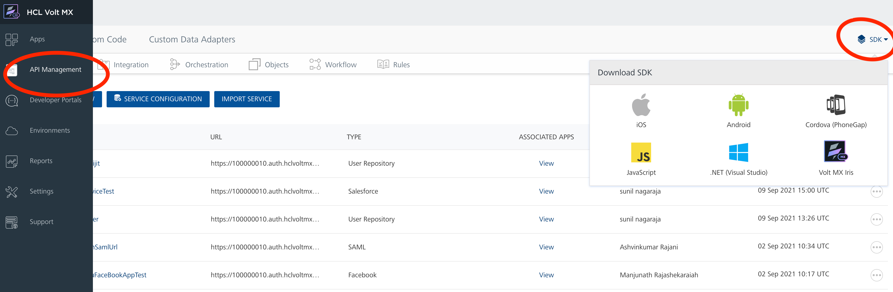

VoltMX Iris
These steps show how to add the VoltMX-IDE-SDK to your project and set up VoltMX Foundry Client.
Prerequisites
- VoltMX Iris 7.0 and above.
Downloading VoltMX IDE SDK Files
The VoltMX SDK is now included as part of the VoltMX development tools and the SDK version is managed using the update feature within the software.
If you need to install the VoltMX development tools, please download the updates from VoltMX downloads site.

Initializing the VoltMX JS Client SDK
Initialize VoltMX Foundry client with the following code, and start using the services provided in VoltMX Foundry. The initialization method fetches the configuration from VoltMX Foundry and saves it in the cache. Later, the application uses the cached configuration. It is a synchronous call.
The preferred way to initialize the VoltMX JS client SDK is by using the feature initWithServiceDocthrough the VoltMX Iris Enterprise application. The client can also be initialized manually, but this is not recommended.
Initializing the VoltMX JS Client SDK with initWithServiceDoc
In Iris Enterprise, follow these steps:
-
Ensure Iris Enterprise has been logged into using the Cloud console login credentials.
In the top menu of Iris Enterprise Go to Help -> About VoltMX License -> Manage License -> Enter VoltMX Cloud console credentials for your cloud account (https://manage.voltmx.com) -> Finish
Iris Enterprise will login using the credentials. After successful login, the login name would appear in the bottom bar of Iris Enterprise. -
Set the correct MobileFoundry server.
Click on the project settings icon (spanner and screw icon) in the left side nav panel in Iris Enterprise -> MobileFoundry Details -> click on the drop down in MobileFoundry Environment -> Choose the correct server where the MobileFoundry app has been published from cloud console. -
Choose the MobileFoundry app
Right click the MobileFoundry section in Project -> Use Existing App -> select the MobileFoundry backend app from the list -> Click Use button on the right side of the app name in the list.
If you do not see the MobileFoundry app in this console either the app is not published to an environment in your account.
Once the configure services screen appears you can get back to making further changes by clicking on the workspace icon (9 squares icon).
- MobileFoundry app initialization mode:
Once the mobile foundry app is chosen in previous step, Iris enterprise takes care of automatically initializing the mobilefoundry SDK on app launch.
There are two modes of allowing app to initialize.
- For online only app: Click on the project settings icon (spanner and screw icon) in the left side nav panel in Iris Enterprise -> MobileFoundry Details -> ServiceDoc Preferences -> Select check box Fetch service document from environment as part of build -> click finish on bottom of Mobilefoundry Details tab.
This will ensure that MobileFoundry is initialized by Iris Enterprise on app launch. If device is offline the initialization will fail and app has to be restarted after connecting to network for services to work. -
For online/offline app:
-
Init with ServiceDoc:
This option is available in all 7.0 versions of Iris Enterprise.
If you are using 6.5.x version of VoltMX Studio, please make sure you update the VoltMX Studio plugins to the following versions or later:
-
VoltMX Studio
com.voltmx.core_6.5.2.GA_v201601271530_r8
com.voltmx.thirdparty_6.5.2.GA_v201512291313_r2
-
-
MobileFoundry Client SDK
-
com.voltmx.mobile.foundry.client.sdk_6.5.2.GA_v201601312211_r3
Login to cloud console (https://manage.voltmx.com) in browser -> Apps -> Click on the MobileFoundry app published to environment -> Publish -> Click on the MobileFoundry environment for which app was published -> Right click on cloud download icon -> Click on App Service Document -> Save the contents of the App Service Document as a file with .json extension in local system. Ex: for appname TestMF the content can be saved as TestMF.json
- Select the check box Select service document file -> Browse and upload downloaded service document file -> click Finish on bottom of MobileFoundry Details tab.
-
-
If Automatic event capture is required for application events (Available from 6.5.x VoltMX Studio Plugins only), click on the Project Settings icon (spanner and screw icon) in the left side nav panel in Iris Enterprise -> Metrics APM -> Check the box Enable automatic event capture -> check boxes for all event types required to be automatically captured -> Click Finish at the bottom of the tab.
- Remove any manual initialization of MobileFoundry app with appkey/appsecret in the app. choosing the MobileFoundry app from MobileFoundry in step c ensures that the client binary has code for automatically initializing the mobile foundry app on application launch.
- Clean and build the application for the desired platforms.
init
Manual initialization is not recommended; those with plugins of version 6.5.2.x or higher should always use initWithServiceDoc, as described above.
Initialize the VoltMX Foundry client with the following code.
//Sample code to initialize VoltMX Foundry Client
var appkey =
var appsecret =
var serviceURL =
var client = new voltmx.sdk();
client.init(appkey, appsecret, serviceURL, function(response) {
voltmx.print("Init success");
}, function(error) {
voltmx.print("Init Failure");
});
setClientParams for manual init
If you are unable to upgrade to the version 6.5.2.x or higher plugins, you can still initialize the VoltMX JS SDK manually. However, some data types will not be captured in the metrics of the app. Use setClientParameters, shown below, to ensure that application identifiers remain consistent across different data triggers.
Setting clientParams in manual init scenario using setClientParams API allows MobileFoundry SDK to send client side parameters application ID and application name to the parameters set from VoltMX Studio/Iris enterprise and allows it to be consistent across different data collection points like integration services, application events and custom metrics.
Initialize the VoltMX Foundry setClientParams with the following code.
//Sample code to initialize VoltMX Foundry Client manually
VMXMobileFoundry = new voltmx.sdk();
clientParams = {};
clientParams.aid = appConfig.appId;
clientParams.aname = appConfig.appName;
VMXMobileFoundry.setClientParams(clientParams);
Configuring global parameters
The global parameter APIs provide the ability to set, remove, and edit global header params, query params, and body params to send in all subsequent SDKnetwork calls.
enum globalRequestParamType
The globalRequestParamType enum specifies the following param types:
- headers
- queryparams
- bodyparams
getGlobalRequestParams
The getGlobalRequestParams method returns all global params of the specified type that have been set.
Sytnax
getGlobalRequestParams(paramType);
Parameters:
| Name | Type | Description |
|---|---|---|
| paramType | globalRequestParamType | The type of the param. |
Return value:
This method returns a list of all network params in the following format: ({
Example
// This example returns all global header params.
var client = voltmx.sdk.getCurrentInstance();
client.getGlobalRequestParams(voltmx.sdk.globalRequestParamType.headers);
setGlobalRequestParam
The setGlobalRequestParam method adds a param with the specified name, value, and type to the network calls. If a param with the same name already exists, this API will override that param. If the same param name is manually added to a network call, the local param will have a higher priority than the global param. Once a param has been added, it is sent globally to all network calls from licensing and the SDK.
Syntax
setGlobalRequestParam(paramName, paramValue, aramType);
Parameters
| Name | Type | Description |
|---|---|---|
| paramName | String | Name of the parameter |
| paramValue | String | Value of the parameter |
| paramType | globalRequestParamType | The type of the parameter |
Example
// This example sets a global header with header name testHeader and value testValue.
var client = voltmx.sdk.getCurrentInstance();
client.setGlobalRequestParam("testHeader", "testValue", voltmx.sdk.globalRequestParamType.headers);
removeGlobalRequestParam
The removeGlobalRequestParam method removes the specified param from network calls.
Syntax
removeGlobalRequestParam(paramName, paramType);
Parameters
| Name | Type | Description |
|---|---|---|
| paramName | String | The name of the parameter. |
| paramType | globalRequestParamType | The type of the parameter. |
Example
// This code example removes the global header with header name testHeader.
var client = voltmx.sdk.getCurrentInstance();
client.removeGlobalRequestParam("testHeader", voltmx.sdk.globalRequestParamType.headers);
resetGlobalRequestParams
The resetGlobalRequestParams method resets all the global request params.
Syntax
resetGlobalRequestParams()
Parameters
None.
Example
// This example resets all the global request params
var client = voltmx.sdk.getCurrentInstance();
client.resetGlobalRequestParams();
Setting User ID
The setUserID API sets the user ID for the data gathered from an application. The user ID allows the data to be tracked on a user basis for broad analysis like how many different users used the application. It also helps to track activities of a specific user, which can help in seeing what activities were done before a crash, or what events led to a transaction not passing through. The user ID allows the same user to be tracked across different devices as well.
// Sample code to set userid
voltmx.setUserID("userID");
VMXMetricsService.setUserId has been removed from apps built with VoltMX Iris Enterprise.
Invoking an Identity Service
The following are the methods you can use for an identity service.
- Login with provider type as Basic
- Get Backend Token
- User Profile
- Get Provider Name
- Get Provider Type
- Logout
Login with provider type as Basic
// Sample code to authenticate to VoltMX Foundry Client
var authClient = null;
var providerName = ;
var username = ;
var password = ;
var loginOptions={};
loginOptions.isSSOEnabled = true;
try {
authClient = VMXMobileFoundry.getIdentityService(providerName);
} catch (exception) {
voltmx.print("Exception" + JSON.stringify(exception));
}
authClient.login({
"userid": username,
"password": password,
"include_profile": true,
"loginOptions": loginOptions
}, function(response) {
voltmx.print("Login success" + JSON.stringify(response));
}, function(error) {
voltmx.print("Login failure" + JSON.stringify(error));
}
);
The client is the voltmx.sdk(); object.
This code sample shows:
1. The isSSOEnabled flag set to true, indicating that Single SignOn (SSO) is enabled. This parameter must be passed every time the user logs in. The parameters "userid" and "password" are required only for the first login. For more information about SSO, see the Application SSO section of the Features chapter of the User Guide.
2. The "include_profile parameter is set to true. This parameter specifies whether to encode the user profile as part of the claims token.
When you select VoltMX User Repository as the identity type, the system does not allow you to provide an identity name.
To use VoltMX User Repository as authentication service, the value for providerName must be set as userstore. If you set it with any other value (for example, VoltMX User Repository, User Store or Cloud Repository), the system throws an error.
Login with provider type as OAuth/SAML
// Sample code to authenticate to VoltMX Foundry Client var authClient = null;
var providerName = ;
var loginOptions={};
loginOptions.isSSOEnabled = true;
try {
authClient = VMXMobileFoundry.getIdentityService(providerName);
} catch (exception) {
voltmx.print("Exception" + exception.message);
}
authClient.login({"include_profile": true, "loginOptions": loginOptions},
function(response) {
voltmx.print("Login success" + JSON.stringify(response));
}, function(error) {
voltmx.print("Login failure" + JSON.stringify(error));
}
);
The client is the voltmx.sdk(); object.
This code sample shows the isSSOEnabled flag set to true, indicating that Single SignOn (SSO) is enabled. This parameter must be passed every time the user logs in. For more information about SSO, see the Application SSO section in the Features chapter of the User Guide.
This code sample shows the include_profile parameter set to true. This parameter specifies whether to encode the user profile as part of the claims token.
Get Backend Token
// Sample code to get backend token for provider
var userid = ;
var password = ;
var forceFromServer = true/false;
authClient.getBackendToken(forceFromServer , {
"userid": userid,
"password": password
}, function(response) {
voltmx.print("Backend token is :" + JSON.stringify(response));
}, function(error) {
voltmx.print("Failed to get backend token : " + JSON.stringify(error));
}
);
If forceFromServer is true, then the SDK fetches the token from the server. If forceFromServer is false, then the SDK gives you the token present in localStorage. Please note that only few backend providers such as Salesforce support refresh. If a backend provider does not support refresh, passing forceRefreshFromServer=true would result in empty response from this api.
The authClient is the IdentityService object.
User Profile
// Sample code to get user profile details
var forceFromServer = true/false;
authClient.getProfile(forceFromServer,
function(response) {
voltmx.print("User profile is :" + JSON.stringify(response));
}, function(error) {
voltmx.print("Failed to fetch profile : " + JSON.stringify(error));
}
);
If forceFromServer is true, then the SDK fetches the token from the server. If forceFromServer is false, then the SDK gives you the token present in localStorage.
The authClient is the IdentityService object.
Get Provider Name
// Sample code to get provider name
Var providerName = authClient.getProviderName();
The authClient is the IdentityService object.
Get Provider Type
// Sample code to get provider type
Var providerType = authClient.getProviderType();
The authClient is the IdentityService object.
Logout
// Sample code to logout from auth service
var options={}
options["slo"] = true;
authClient.logout(function(response) {
voltmx.print("Logout success" + JSON.stringify(response));
}, function(error) {
voltmx.print("Logout failure" + JSON.stringify(error));
}, options);
The authClient is the IdentityService object for the loggedIn provider.
This code sample shows the parameter slo set to true, indicating that all apps will be logged out when SSO is enabled. If this parameter is false, or not sent, the user will be logged out of the single app. For more information, see the Application SSO section of the Features chapter of the User Guide.
Invoking an Integration Service
This API invokes an integration service that is configured in the VoltMX Foundryportal.
// Sample code to fetch the integration service details
var integrationClient = null;
var serviceName = ;
var operationName = ;
var params = { "your-input-keys" : "your-input-values"};
var headers = {"your-header-keys" : "your-header-values"};//If there are no headers,pass null
// options is an optional parameter helps in configuring the network layer.
// To configure for a thin layer, use xmlHttpRequestOptions instead of httpRequestOptions.
var options={"httpRequestOptions":{"timeoutIntervalForRequest":60,
"timeoutIntervalForResource":600}}
try{
integrationClient = VMXMobileFoundry.getIntegrationService(serviceName);
}
catch(exception){
voltmx.print("Exception" + exception.message);
}
integrationClient.invokeOperation(operationName, headers, params,
function(result) {
voltmx.print("Integration Service Response is :" + JSON.stringify(response));
},
function(error) {
voltmx.print("Integration Service Failure :" + JSON.stringify(error));
}, options
);
The client is the voltmx.sdk(); object.
Get Endpoint URL
// Sample code to get endpoint URL
var url = integrationClient.getUrl();
The integrationClient is the IntegrationService object.
Invoking a Messaging Service
A developer should register with Google Cloud Messaging (GCM) for Android services to get the deviceToken that is used to register with VoltMX Foundry Messaging. Also a developer should fetch the deviceId and userfriendlyId to create an instance of messaging service.
The following are the methods you can use for a messaging service.
- Register
- Unregister
- Update GeoLocation
- Fetch All Messages
- Mark Message as Read
- Fetch Message Content from VoltMX Foundry Messaging
Register
// Sample code to register to messaging service
var messagingClient = null;
var osType = "androidgcm" for android
"iphone" for iphone
"ipad" for ipad
"ipod" for ipod
var deviceId = voltmx.os.deviceInfo().deviceid;
// To get regID, use [**voltmx.push.register(**)](http://docs.voltmx.com/voltmxlibrary/studio/voltmx_studio_api_reference_guide/Default.htm#push_notifications.htm%23push.reg) method
var regID = ;
var UFID = ;
try{
messagingClient = VMXMobileFoundry.getMessagingService();
}
catch(exception){
voltmx.print("Exception" + exception.message);
}
messagingClient.register(osType,deviceID, regId, UFID,
function(response){
voltmx.print("Subscription Success " + JSON.stringify(response));
},
function(error){
voltmx.print("Subscription Failure " + JSON.stringify(error));
}
);
Unregister
// Sample code to unregister from messaging service
messagingClient.unregister(
function(response){
voltmx.print("Unregistration Success " +JSON.stringify(response));
},
function(error){
voltmx.print("Unregistration Failure " +JSON.stringify(error));
}
);
The messagingClient is the MessagingService object.
Update GeoLocation
// Sample code to update the geolocation
var latitude = ;
var longitude = ;
var locationName = ;
messagingClient . updateGeoLocation (latitude,longitude,locationName
function(response){
voltmx.print("Geolocation update successful :" +JSON.stringify(response));
},
function(error){
voltmx.print("Geolocation update failure: " +JSON.stringify(error));
}
);
The messagingClient is the MessagingService object.
Fetch All Messages
// Sample code to fetch all messages
var startIndex = 0;
var pageSize = 1000;
messagingClient .fetchAllMessages(startIndex,pageSize,
function(response){
voltmx.print("Fetched all messages :" +JSON.stringify(response));
},
function(error){
voltmx.print("Failed to fetch messages : " +JSON.stringify(error));
}
);
The messagingClient is the MessagingService object.
Mark Message as Read
// Sample code to mark messages as read
var fetchID = ;
messagingClient . markMessageRead (fetchID,
function(response){
voltmx.print("Message marked as read successfully :" +JSON.stringify(response));
},
function(error){
voltmx.print("Failed to mark message as read : " +JSON.stringify(error));
}
);
The messagingClient is the MessagingService object.
Fetch Message Content from VoltMX Foundry Messaging
// Sample code to fetch message content from VoltMX Foundry Messaging
var fetchID = ;
messagingClient . fetchMessageContent (fetchID,
function(response){
voltmx.print("Message content is :" +JSON.stringify(response));
},
function(error){
voltmx.print("Failed to fetch message content: " +JSON.stringify(error));
}
);
The messagingClient is the MessagingService object.
Invoking a Reporting Service
The Reporting Service APIs will be deprecated from 6.0.4. Please use Metrics Service from 6.5 GA onwards.
Reporting service class helps a developer to get information on services used by number of users. The user access information helps for billing based on use of services.
Custom Reports
Send Custom Metrics
// Sample code to send custom metrics
var reportingService = VMXMobileFoundry.getReportingService();
reportingService.report("",{"test metrics":"some test data"});
The client is the voltmx.sdk(); object.
Custom Event Flow
With custom events APIs, you can enhance reporting capabilities to capture end users interaction with UI in the console, and be able to view a snapshot of the reports by using the reporting service.
reportEvents
This API allows a developer to capture a UI event for reporting purpose.
var eventType = "Touch" ;
var eventSubType = "eventSubType";
var formId = "formID";
var widgetId = "widgetId";
var flowTag = "flowtag";
voltmx.sdk.metric.reportEvent (eventType, eventSubType,formId,widgetId, flowTag);
The EventType is a ENUM.
The eventSubType, formId, widgetId, flowTag should be max of 256 characters.
Possible values for eventType are "Touch","FormEntry","FormExit","ServiceCall","Gesture","Orientation","Custom"
flushEvents
This API allows a developer to force events to be sent to the server. The entire current event buffer is loaded and sent to the server for processing.
voltmx.sdk.metric.flushEvents();
setEventFlowTag
This API sets an event flow tag to be associated with all new events that are reported by using the reportEvent API.
var eventFlowTag = "flowTag";
voltmx.sdk.metric.setEventFlowTag(eventFlowTag);
A flowTag should be max of 256 characters.
clearEventFlowTag
The API clears a current event flow tag set by a developer.
voltmx.sdk.metric.clearEventFlowTag();
getEventFlowTag
The API reads a current event flow tag set by a developer.
var flowTag = voltmx.sdk.metric.getEventFlowTag();
setEventConfig
This API sets the configuration that processes the events reported after this call. Any existing events that are already in the buffer will not be affected by this configuration.
var maxBufferCount = ;
var autoFlushCount = ;
var EventConfigType = "buffer";
voltmx.sdk.metric.setEventConfig(EventConfigType,maxBufferCount,autoFlushCount);
Possible values of EventConfigType are "Instant" and "Buffer"
The autoFlushCount and maxBufferCount should be positive and greater than 0.
If the mode is instant, then the events are sent to the server as soon as the report method is called.
If the mode is buffer, then the reports are sent to the server when:
- Number of events reach the autoflushcount (or)
- The flush method is called (or)
- The Service(Init,Integration or Sync) call is made.
Invoking a Metrics Service Object
When the JS SDK is initialized, it will automatically collect various standard metrics from a client and the standard metrics will be accessible using the Standard Reports within MobileFoundry Console.
The JS SDK also provides the ability for a developer to send additional custom metrics from a client app to MobileFoundry back-end to capture additional information. These custom data sets will be accessible using the Custom Reporting feature within MobileFoundry Console where a business analyst can design and share reports using a combination of standard and custom metrics.
Additionally, the JS SDK provides an Events API that allows an app to track user actions within the app to gain insight into the user journey. The developer can send various standard events such as form entry, touch events, service requests, gestures and errors. The developer can also send custom events to capture any app specific scenarios or transactions. These events can be analyzed within MobileFoundry Console by using the Standard Reports or user defined Custom Reports. For more details, refer to Custom Metrics and Reports Guide.
This section lists all MetricsService object APIs.
On SDK initialization, the Metrics Service is available with the variable name VMXMetricsService.
Configuring Application Events Reporting
The MetricsService class sets the configuration for APM event reporting.
-
@param reportingMode{string }specifies the event reporting mode which can be currently only set to "Buffer" Mandatory
-
@param bufferAutoFlushCount{number }In case the reportingMode is set to Buffer, this property specifies the number of events to be buffered before flushing. Optional
-
@param maxBufferCount{number }In case the reportingMode is set to Buffer, this property specifies the maximum number of events that can be buffered. Events exceeding the maxBufferCount will be ignored. Optional
-
@Availability Applicable on All native Platforms (iOS, Android)
//Sample code to set the configuration for application events.
VMXMetricsService.setEventConfig("Buffer", 50, 200);
setUserID
The setUserID API sets the user ID for the data gathered from an application. The user ID allows the data to be tracked on a user basis for broad analysis like how many different users used the application. It also helps to track activities of a specific user, which can help in seeing what activities were done before a crash, or what events led to a transaction not passing through. The user ID allows the same user to be tracked across different devices as well.
- @param setUserId {string }User ID to be passed Mandatory
setUserID = function (/**string */setUserId ,){}
//Sample code to set up the user ID of application user
voltmx.setUserID("myUserID");
The UserID related to metrics. The UserID length cannot be more than 100 characters.
VMXMetricsService.setUserId has been removed from apps built with VoltMX Iris Enterprise.
sendEvent
The sendEvent API allows a developer to send event details from an application to server for analytics and reporting purposes. The event data is added to a buffer and sent to server as per configuration values set by the developer using setEventConfig API.
- @param eventType {string }specifies the event type. Can be one of the following constants. FormEntry, FormExit, Touch, ServiceRequest, ServiceResponse, Gesture, Orientation, Error, Exception, Crash, CustomMandatory
- @param eventSubType{string }specifies the sub type of event.Optional
- @param formID{string }widget ID of the form where event happened.Optional
- @param widgetID {string }widgetID of the widget on which the event happened.Optional
- @param flowTag {string }flowTag to added for this eventOptional
- @param metaInfo {JSObject [Key value pairs]}event specific meta data Optional
- @Availability Applicable on All native Platforms (iOS, Android)
sendEvent = function (/**string */eventType ,/**string */eventSubType,/**string */ formID,/**string */widgetID ,/**string */flowTag ,/**JSObject [Key value pairs]*/metaInfo ){}
//Sample code to send reports
VMXMetricsService.sendEvent("FormEntry", "frmHome", "frmHome", null, {"key1":"value1"});
This API is required to be used only if the application developer chooses to send their own custom events. All event types chosen for automatic event tracking from the Metrics APM tab in application properties or set using the setEventTracking API will automatically be tracked.
setFlowTag
The setFlowTag API sets an event flow tag to be associated with all new events that are reported by using the sendEvent API. The flow tag is used to ease searching event data in terms of application flows like loginflow, searchflow. The setFlowTag also helps in sorting and filtering data while building custom reports or running standard reports for the application events.
- @param flowtag {string }Flow tag name Mandatory
- @Availability Applicable on All native Platforms (iOS, Android)
setFlowTag = function (/**string */flowtag ,){}
//Sample code to setFlowTag
VMXMetricsService.setFlowTag("MyFlowTag");
setEventTracking
The setEventTracking API sets the event types to be tracked.
- @param EventTypes {JSObject [Array]}An array of string constants which are valid event types This method must be called during the life time of the application to enable event tracking, otherwise the default behaviour is not to track any events. An empty array or a null object as a parameter to this method results in not to track any of the events. Mandatory
- @Availability Applicable on All native Platforms (iOS, Android)
setEventTracking = function (/**JSObject [Array]*/EventTypes ,){}
//Sample code
VMXMetricsService.setEventTracking(["FormExit", "FormEntry", "Touch"]);
Supported values for setEventTracking are
["FormEntry","FormExit","Touch","ServiceRequest","ServiceResponse","Gesture","Orientation","Error","Crash"]
getEventTracking
The getEventTracking API gets the list of all event types that are being tracked currently.
- @Availability Applicable on All native Platforms (iOS, Android)
getEventTracking = function (){}
//Sample code
var events = VMXMetricsService.getEventTracking();
clearFlowTag
The clearFlowTag API clears the currently set event flow tag.
- @Availability Applicable on All native Platforms (iOS, Android)
clearFlowTag = function (){}
//Sample code to clearFlowTag
VMXMetricsService.clearFlowtag();
getFlowTag
The getFlowTag API gets the currently set event flow tag.
- @Availability Applicable on All native Platforms (iOS, Android)
getFlowTag = function (){}
//Sample code to getFlowTag
var flowtag = VMXMetricsService.getFlowTag();
reportError
The reportError API enables an app to report an error event to metrics server.
- @param errorCode{string } errorCode can be nil if not applicable.Mandatory
- @param errorType {string }errorType can be nil if not applicable.Mandatory
- @param errorMessage {string } errorMessage can be nil if not applicable.Mandatory
- @param errorDetails {string }errorDetails is a json string that can have key-value pairs for the following keys errfile, errmethod, errline, errstacktrace, errcustommsg, errcrashreport, formID, widgetID, and flowTag.Mandatory
- @Availability Applicable on All native Platforms (iOS, Android)
reportError = function (/**string */errorCode,/**string */errorType ,/**string */errorMessage ,/**string */errorDetails ,){}
//Sample code to reportError
VMXMetricsService.reportError("1234", "SpecificError", "custom error message", "{errfile:file.js}");
This API is required to be used only if the application developer chooses to send their own error events. If Error event type is chosen for supported platforms via application properties or setEventTracking API, error tracking will automatically be done.
reportHandledException
The reportHandledException API enables apps to report a handled exception event. Application developers can use this API to report handled exceptions in the application code.
- @param exceptionCode {string }exceptionCode can be nil if not applicable.Mandatory
- @param exceptionType {string }string type of exception, such as Eval Error or syntax error. The exceptionType can be nil if not applicable.Mandatory
- @param exceptionMessage {string }exceptionMessage can be nil if not applicable.Mandatory
- @param exceptionDetails {string }exceptionDetails is a JSON string that can have key-value pairs for the following keys exceptionfile, exceptionmethod, exceptionline, exceptionstacktrace, formID, widgetID, and flowTag.Mandatory
- @Availability Applicable on All native Platforms (iOS, Android)
reportHandledException = function (/**string */exceptionCode ,/**string */exceptionType ,/**string */exceptionMessage ,/**string */exceptionDetails ,){}
//Sample code to send exception to metrics server
VMXMetricsService.reportHandledException ("1234", "SpecificException", "custom exception message", "{errfile:file.js}");
flushEvents
The flushEvents API allows a developer to force events to be sent to the server. The entire current event buffer is loaded and sent to the server for processing. The flushEvents API is used as an override to send event data to server before the value configured in seteventconfig for autoflushcount is reached.
- @Availability Applicable on All native Platforms (iOS, Android)
flushEvents = function (){}
//Sample code to flushEvents
VMXMetricsService.flushEvents();
sendCustomMetrics
The sendCustomMetrics API allows the developer to send custom metrics from the application.
The custom metrics keys should already be registered in MobileFoundry Console for the application before data is sent from application.
-
@param groupId{JSObject [Array]}
formID length cannot be more than 250 characters.Mandatory
-
@param data {data}data to be sendMandatory
- @Availability Applicable on All native Platforms (iOS, Android)
sendCustomMetrics = function (/**JSObject [Array]*/groupId,/**data*/data ,){}
//Sample code to sendCustomMetrics
VMXMetricsService.sendCustomMetrics("formID", {"metric":"metricdata"});
For more details about custom metrics and reports, refer to Custom Metrics and Reports Guide.
Third party APM (Crittercism)
apm.crittercism.initialize(, {"didCrashOnLastLoadHandler":}
This API allows a developer to initialize the Crittercism if the same has been enabled from application properties.
Global Error Handler
The uncaughtexceptionhandler APIs are available only for iOS and Android native apps built from VoltMX Iris.
setUncaughtExceptionHandler
This API allows a developer to register a callback function to be invoked for uncaught JS exception.
voltmx.lang.setUncaughtExceptionHandler (<Callback function for ErrorHandling>)
//Sample code to setUncaughtExceptionHandler
function myErrorHandler(){
}
voltmx.lang.setUncaughtExceptionHandler (myErrorHandler)
getUncaughtExceptionHandler
This API allows a developer to get the function that is currently registered for the uncaught JS exceptions.
//Sample code to getUncaughtExceptionHandler
voltmx.lang.getUncaughtExceptionHandler()
Event Details
For all event details, timestamp of event and session identifier values are automatically filled by MBaaS Client SDK, as part of the reportEvent, reportError and reportHandledException API calls. In case of automatically captured events, flowTag is also automatically filled with the currently set flowTag. The following are event specific details to be used while interfacing with MBaaS SDK while manually invoking sendEvent API to send event data.
FormEntry
- API to be used - sendEvent
- evtType - FormEntry
- FormID - value of the ID property of the form widget
- WidgetID - null
- evtSubType - Value of the ID property of the form widget
- metadata - null
FormExit
- API to be used - sendEvent
- evtType - FormExit
- FormID - value of the ID property of the form widget
- WidgetID - null
- evtSubType - Value of the ID property of the form widget
- metadata - null
Touch
- API to be used - sendEvent
- evtType - Touch
- FormID - value of the ID property of the form widget where the touch happened
- WidgetID - value of the ID property of the widget on which the touch happened
- evtSubType - value of this attribute depends upon where the touch happened. Button_Click should be used when touch happens to be a click event on button widget)
- metadata - null
ServiceRequest
- API to be used - sendEvent
- evtType - ServiceRequest (constant, exposed by MBaaS SDK)
- FormID - value of the ID property of the form widget currently displayed on the screen
- WidgetID - null
-
evtSubType
Service ID - in case of service invoking VoltMX middle ware
URL - in case of other requests
-
metadata - null
ServiceResponse
- API to be used - sendEvent
- evtType - ServiceResponse (constant, exposed by MBaaS SDK)
- FormID - value of the ID property of the form widget currently displayed on the screen
- WidgetID - null
-
evtSubType
Service ID - in case of service invoking VoltMX middle ware
URL - in case of other requests
-
metadata
JSON object (hash table) containing following key value pairs:- opstatus - Optional
returned by VoltMX servers - httpcode - HTTP status code
- resptime - time taken to get the reponse.
- opstatus - Optional
Gesture
- API to be used - sendEvent
- evtType - Gesture (constant, exposed by MBaaS SDK)
- FormID - value of the ID property of the form widget where the gesture happened
- WidgetID - value of the ID property of the widget on which the gesture happened
-
evtSubType [String]
GESTURETYPE_NUMBEROFINPUTS_DIRECTION
For example, two finger left swipe SWIPE_2_LEFT -
metadata - null
Orientation
- API to be used - sendEvent
- evtType - Orientation (constant, exposed by MBaaS SDK)
- FormID - value of the ID property of the form widget currently displayed on the screen
- WidgetID - null
-
evtSubType [String] - any one of the below constants is used
- PORTRAIT_TO_LANDSCAPE
- LANDSCAPE_TO_PORTRAIT
-
metadata - null
Error
- API to be used - sendEvent
- FormID - value of the ID property of the form widget currently displayed on the screen
- WidgetID - null
-
evtSubType
ErrorCode - Optional
-
metadata
JSON object (hash table) containing following key value pairs:- errcode - Optional
- errmsg - Optional
- errfile - Optional
- errmethod - Optional
- errstacktrace - Optional
- errcustommsg - Optional
HandledException
- API to be used - sendEvent
- FormID - value of the ID property of the form widget currently displayed on the screen
- WidgetID - null
-
evtSubType
ExceptionCode - Optional
-
metadata
JSON object (hash table) containing following key value pairs:- exceptioncode - Optional
- exceptionev - Optional
- exceptionmsg - Optional
- exceptionfile - Optional
- exceptionmethod - Optional
- exceptionstacktrace - Optional
- exceptioncustommsg - Optional
Crash
- API to be used - sendEvent
- FormID - value of the ID property of the form widget currently displayed on the screen
- WidgetID - null
-
evtSubType [String]
-
metadata
JSON object (hash table) containing following key value pairs:- errcode - Optional
- errmsg - Optional
- errfile - Optional
- errmethod - Optional
- errline - Optional
- errstacktrace - Optional
- errcrashreport - Optional
Custom
- API to be used - sendEvent
- evtType - Custom
- FormID - any supplied form ID
- WidgetID - any supplied widget ID
- evtSubType - any supplied event subtype
- metadata - string or a dictionary
Invoking Sync APIs
For more information, see Sync Framework Documentation.
APIReference
To view APIReference for VoltMX JS, clickVoltMX IDE docset.